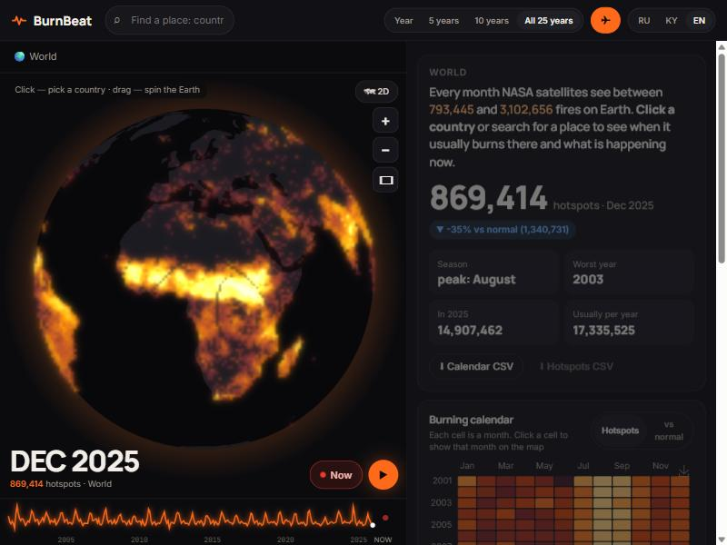
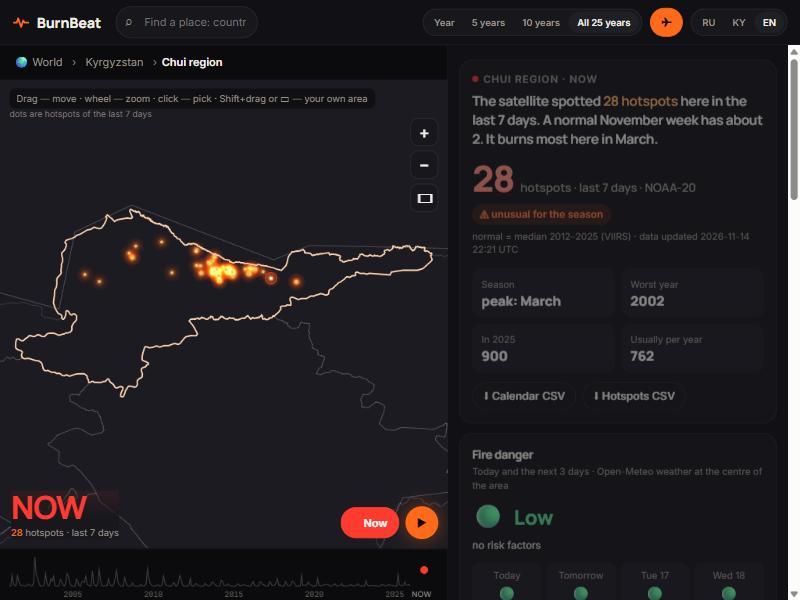

NASA Space Apps Challenge 2026 · MODIS & VIIRS Hot Spots
A harmonized burning calendar for any place on Earth — and an early warning for Kyrgyzstan.
Live app: bakai4eg.github.io/fire-free-will · code: github.com/bakai4eg/fire-free-will

The problem
4×
The new VIIRS sensor (2012) sees about four times more small fires than the old MODIS (2000).
4.4M → 17.4M
Hotspots on Earth per year in the raw record, 2011 → 2012. Not more fire — a new instrument.
Stitched together as is, the record says the planet suddenly caught fire. A fire manager can’t tell a bad season from a sensor change.
Harmonization
1 · Filter
Vegetation fires only. Factories, gas flares and volcanoes are removed.
2 · Calibrate
A VIIRS/MODIS ratio for every 1° cell and month, fitted on 2012–2016, before MODIS orbit drift.
3 · Validate
Each year 2012–2019 hidden from the model in turn and compared with what VIIRS really saw.
−0.3%
bias after harmonization, vs −75% for raw MODIS. Monthly error 19× smaller. Whole planet, 1° grid; Kyrgyzstan at 0.25°.
The tool

Burning calendar 2001–2025, peak season, worst year.
Last 7 days vs the normal, refreshed every 3 hours.
Season, anomaly and the weather forecast together.
Case · Kyrgyzstan · 15 November 2026
March & August
Two burning seasons: spring and autumn field burning. Now is off-season — so the outbreak stands out.
300+ near one village
Kotovskoye: the most hotspots within 3 km since 2001. We rank villages so services know where to go.
r ≈ −0.4
Wet months burn less, in every region (rainfall: NASA POWER, 2012–2025).
Live numbers from 15 November 2026; the app refreshes them every 3 hours.
Impact
Plan the season, see anomalies early, send patrols before the peak.
A Telegram bot every morning: risk level with reasons, new fires near the village.
Any country, CSV and PNG export, an open method with honest limits.
Cause → prevention → response: we warn the people who light fires, not only those who put them out.
Data · limits · next
NASA FIRMS: MODIS C6.1, VIIRS S-NPP, NOAA-20/21 · NASA POWER · Open-Meteo · GeoNames · geoBoundaries
~100 km grid outside Kyrgyzstan · 2001 seen by one satellite · danger is a rating, not a forecast
Fill Jan–Oct 2026 via the FIRMS API · finer grid for more countries · the standard Fire Weather Index
Try it: bakai4eg.github.io/fire-free-will · github.com/bakai4eg/fire-free-will · Telegram @burn_beat_bot